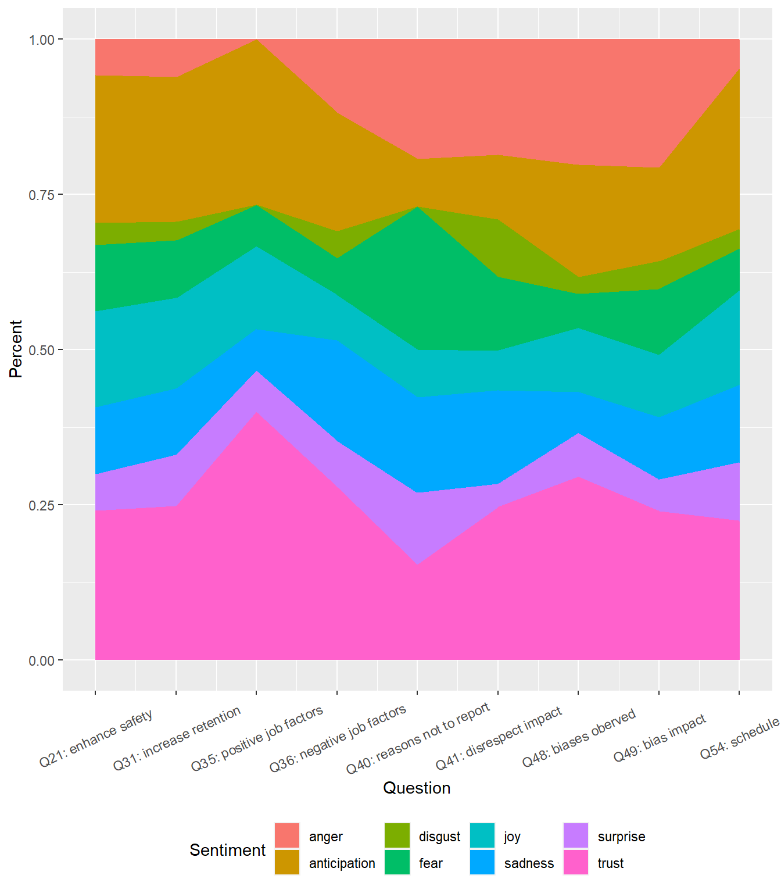

| Full Question | Abreviated Question | Number of Responses |
|---|---|---|
| Q21 How could ADF&G enhance employee safety and wellbeing? | Q21: enhance safety/wellbeing | 279 |
| Q31 Aside from monetary compensation, how can ADF&G increase your overall desire to remain with ADF&G? | Q31: increase retention | 152 |
| Q35 We recognize a variety of factors impact your job satisfaction. Please select the top three (3) factors having a positive impact on your overall job satisfaction. - Other (please specify) - Text | Q35: positive job satisfaction factors | 6 |
| Q36 We recognize a variety of factors impact your job satisfaction. Please select the top three (3) factors having a negative impact on your overall job satisfaction. - Other (please specify) - Text | Q36: negative job satisfaction factors | 34 |
| Q40 13 What were your reasons for not reporting what you experienced? (select all that apply) - Other (please specify) - Text | Q40: reasons not to report | 10 |
| Q41 If you’ve seen or experienced disrespect or harassment in the workplace, how has that impacted you or your team? | Q41: disrespect impact | 87 |
| Q48 What other biases have you seen or experienced at ADF&G? | Q48: biases oberved | 67 |
| Q49 If you’ve seen or experienced bias in the workplace, how has that impacted you or your team? | Q49: bias impact | 61 |
| Q54 How does your schedule, workload, or work/life integration influence your desire to work for ADF&G? | Q54: schedule, workload, work/life | 140 |
2 Text Analysis of Division of Sport Fish Staff comments to the Gotham Culture survey
2.1 Introduction
Gotham Culture provided a Division of Sport Fish specific report and ~30 pages of staff comments to Division Leadership in late April. The staff comments were enlightening but also contained some possibly identifying information. This text analysis of the staff comments represents an effort to share the information contained in the comments broadly while respecting staff privacy.
The DLT was provided with text responses to 9 questions (a total of 836 responses). The complete question, an abbreviation for each question we used in subsequent figures, and the number of responses associated with each question are shown below.
2.2 Text Analysis - Common Words and Bi-grams
One way to quantify staff comments is to tally the most frequently used words within each question. We used a technique call text frequency-inverse document frequency to weight the importance of the words used in each question relative to the use of the same words throughout the entire document. Questions were omitted from Figure 2.1 when there were no highly weighted words. The importance of adequate pay was highlighted by “monetary” being the most frequently used word in response to a question that specifically asked employees to exclude monetary considerations from their answer!
A related way to quantify staff comments is to look for the most common bi-grams (2 word sequences) found in the responses to each question. Questions were omitted from Figure 2.2 when there were no bi-gram repeats.
2.3 Text Analysis - Sentiment and Emotion Analysis
Sentiment analysis associates words found in the staff responses with databases designed to reflect typical responses to those words. We used two databases. The AFinn lexicon associates a numeric sentiment score (-5 to 5) with ~3,400 words. In this lexicon 5 represent an extremely positive sentiment, 0 is neutral, and -5 is extremely negative sentiment. The NCR lexicon associates 8 emotions with ~14,000 words and can associate more than one emotion with the same word. Table 2.2 below shows examples from each lexicon based a subset of most common words identified in Figure 2.1. Note these methods fail to detect sarcasm, misspelling, negation, exc..
| Word | AFinn Lexicon | NCR Lexicon |
|---|---|---|
| safety | 1 | |
| training | ||
| enjoy | 2 | trust,joy,anticipation |
| monetary | anticipation | |
| disrespect | -2 | anger |
| moral | trust,anger | |
| bias | -1 | anger |
The AFinn sentiment analysis was run on each response separately and provides a sense of the sentiment associated with each response and of the distribution of sentiments across responses within each question. Based on the AFinn lexicon words used in responses to questions involving enhanced safety, increased retention, and workload had generally positive sentiment while words used in responses to questions involving bias, reporting and disrespect had generally negative sentiment.

The NCR emotion analysis was run on all responses for each question and gives a general idea of the emotional content in the responses to each question. Based on the NCR lexicon words used in responses to questions involving enhanced safety, increased retention, and workload were more often associated with emotions of trust and anticipation while words used in responses to questions involving bias, reporting and disrespect were more often associated with emotion of anger.
Warning in inner_join(., get_sentiments("nrc"), by = "word", multiple = "all"): Detected an unexpected many-to-many relationship between `x` and `y`.
ℹ Row 28 of `x` matches multiple rows in `y`.
ℹ Row 7510 of `y` matches multiple rows in `x`.
ℹ If a many-to-many relationship is expected, set `relationship =
"many-to-many"` to silence this warning.